Fish Page
Fillet
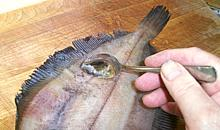
Scaling
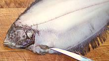
Clean
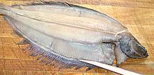
Outline fillet
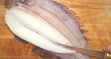
Fillet half side
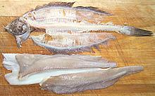
Recipe Ready
Pan Ready
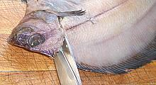
Cut Backbone
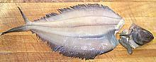
Cleaned - easy!
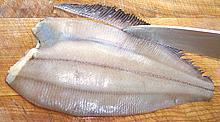
Remove fins
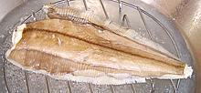
Steaming
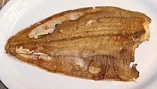
Pan fried
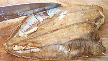
Removing fin rays
Served
The flesh of Gray Sole is white, tender, fine grained and mild. This fish is an excellent substitute for the once common Sanddab, a lefteye flounder that lives in shallower water, but is now scarce in markets due to fishery regulations aimed at protecting rockfish.
Because it's inconvenient to fillet small fish, gray sole is usually sold either whole or "pan ready" (head, innards, tail and fins removed). Our Pan Ready Method covers making fish "pan ready" and cooking them in that form.
For some uses a pan ready fish is fine if properly handled, but for other recipes a pan ready fish just won't work - it'll fill the food with hundreds of tiny bones. for these uses you must fillet. Gray Sole isn't difficult to fillet but get the biggest fish you can to make it easier - Fillet Method.
A 1 pound fish will yield just over 6-1/2 oz of fillet (40%). A 10 ounce fish will yield just over 4 ounces (40%). Don't attempt to skin fillets, you'll likely break them up. The skin is very thin and normally left on. If you pan fry a fillet "skin-on" the skin will shrink a little but then relax as it cooks.
The head and bones and fins make a moderate flavored stock with a somewhat "oceany" flavor and aroma. There's quite a bit of oil which should be removed using your gravy separator.
Fillet Method for Gray Sole
- Scale the fish. Gray sole is covered with very tiny scales and the shape of the fish makes it difficult to scrape with the back of a knife as for other fish, but I find the toothy edge of a grapefruit spoon works just fine.
- Clean the fish. Make a small cut on the blind (white) side and use your littlest finger to pull the innards out - OR - just remove the head with the innards as shown in the procedure for Pan Ready
- Make a cut along the centerline deep enough to cut all the way to the backbone. The fillet is going to break in half anyway so we might as well make our work easy. Make the usual cuts under the front fins and collar to release the fillet from the head, and make a cut at a very shallow angle along the fin edges as shown.
- Fillet from the centerline out following the bones. Should you accidentally get under the fin rays at the transition (quite likely on the thinner blind side) you can just deepen your fin edge outline cut until it meets the main cut.
- You should end up with 4 long narrow fillets and bones with very little flesh adhering to them.
Pan Ready Method for Gray Sole
- Scale the fish as per Fillet Method.
- Make a cut under the collar and front fins as you would for fillet. Then take your kitchen shears and cut the backbone from the top just behind the head.
- Pull the head away and it'll pull out all the innards with it.
- Use your kitchen knife to cut off the fins, cutting just within the margin. No, you can't just cut in farther and remove the fin rays at this point, they overlap the main bones. Cut off the tail if you wish.
- You are now ready to cook the fish by any appropriate method. Shown in the picture is steaming and pan frying but broiling would work well too.
- If steamed or poached: the skin is likely broken up and unsightly. To remove it just press a paper towel over it, the skin will peel up with the towel. Do not attempt to remove the bottom skin, it's very thin, white, on the underside anyway and traditionally left on.
- You could now serve the cooked fish and let the diners deal with the bones, but they'll appreciate not having to. With the fish on your cutting board, best side up, use your kitchen knife to scrape the fin rays away from the fish. Yes, you'll lose a little flesh but the flesh there is kind of gelatinous which some people don't like.anyway.
- Serve in whatever way you please. The backbone and it's bones will still be in the fish but they will stay together and be very easy to deal with. There will be no loose bones at all.